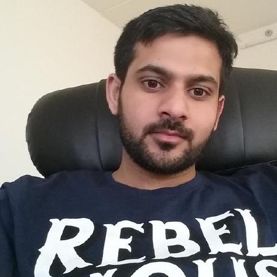

Lisbon, Portugal · Available for ambitious systems
I make complex infrastructure feel calm.
DevOps & Platform Engineer building cloud foundations, Kubernetes platforms, and delivery systems that help teams ship with confidence.
Terraform✦Kubernetes✦AWS✦FluxCD✦Azure✦Grafana✦Prometheus✦Docker✦Terraform✦Kubernetes✦AWS✦FluxCD✦
01 / OPERATING PRINCIPLES
Infrastructure should disappear into a great developer experience.
I design the paved roads behind dependable software: version-controlled infrastructure, automated delivery, observable systems, and security that starts in the pipeline—not after deployment.
02 / EXPERIENCE
From front-end craft
to platform scale.
A career shaped by building software first—and then building the systems that help software teams move faster.
2023 — NOW
SOVOS · LISBON · HYBRID
DevOps Engineer
Operating cloud infrastructure across approximately 100 AWS accounts and multiple Kubernetes clusters. Building Terraform foundations, GitOps delivery with FluxCD, hybrid AWS and CloudTemple platforms, and the observability needed to keep distributed systems reliable.
- AWS
- Kubernetes
- Terraform
- FluxCD
- Grafana stack
- Apigee
2021 — 2023
BLUE CROSS BLUE SHIELD ASSOCIATION · REMOTE
DevOps Engineer
Built Jenkins delivery pipelines, provisioned servers with Ansible, containerized services with Docker, and orchestrated workloads across Kubernetes and Docker Swarm.
2022
CAPGEMINI · LISBON · PROJECT
DevOps Engineer
Contributed to a focused client engagement through GBT Solutions, bringing hands-on DevOps delivery to a short, high-intensity project.
2018 — 2020
UNRAVEL AI · COPENHAGEN
Frontend Developer
Created React interfaces, reusable component libraries, and full website launches with a focus on quality, compatibility, and user-facing craft.
2016 — 2017
FAWAD ONE · ISLAMABAD
Software Engineer
Built web experiences with HTML, CSS, JavaScript, and PHP, partnering with UX designers on content platforms and front-end performance.
03 / SELECTED WORK
Systems that turn
intent into momentum.
Open-source platform experiments and infrastructure patterns built to make delivery more repeatable.
SOURCEGitversioned intent
SYNC
DELIVERYFluxCDcontinuous reconcile
APPLY
RUNTIMEK8splatform services
desired state synchronized
v1.0.001 / FEATURED
Internal Developer Platform
A GitOps platform foundation connecting a developer dashboard, FluxCD, PostgreSQL, and Kubernetes—mapping the path toward self-service infrastructure with Backstage and Crossplane.
- Kubernetes
- FluxCD
- PostgreSQL
- Platform engineering
02 / INFRASTRUCTURE
Terraform foundations
Versioned infrastructure configuration built around reproducible modules and provider discipline.
- Terraform
- HCL
- IaC
03 / NETWORKING
VPC peering
Modular Terraform networking configuration with clear variables, outputs, and repeatable connections.
- AWS
- VPC
- Networking
04 / AUTOMATION
Windows image pipeline
An AWS image factory using Packer, PowerShell provisioning, and automated WinRM bootstrap.
- Packer
- AWS
- PowerShell
04 / CAPABILITIES
The whole path
to production.
Deep infrastructure practice, informed by a software engineering foundation.
Cloud foundations
Multi-account AWS, Azure, networking, identity, compute, storage, and secure hybrid environments.
AWS · Azure · VPC · IAM · CloudTemple
Platforms & GitOps
Container platforms and declarative delivery that keep environments consistent and auditable.
Kubernetes · FluxCD · ArgoCD · Docker · KEDA
Automation & delivery
Infrastructure as code, configuration management, and pipelines that replace tickets with repeatable workflows.
Terraform · Ansible · Jenkins · Azure CI/CD
Observability & security
Signals and safeguards woven into the platform, from metrics and traces to policy and scanning.
Grafana · Prometheus · Loki · Tempo · Trivy

BASED INLisbon, PT
05 / ABOUT
Engineer by discipline.
Builder by instinct.
I’m Saqib Nazir, a DevOps and Platform Engineer with more than five years focused on cloud infrastructure and delivery automation—and a software engineering career that started in the browser.
That combination shapes how I work: I care about reliable systems, but also about the experience they create for the people who use them. I’m especially interested in GitOps, developer platforms, DevSecOps, observability, and AI-assisted engineering.
See my full journey on LinkedIn↗06 / CREDENTIALS
Always learning.
Always shipping.
H
HASHICORP · AUG 2024
Terraform Associate (003)
Credential earned in August 2024. LinkedIn records the certification period through August 2026.
Credential history ↗MS
COMSATS UNIVERSITY ISLAMABAD · 2016
MS, Project Management
Graduate study connecting technical delivery with the structure needed to lead complex work.
BS
UNIVERSITY OF GUJRAT · 2013
BS, Computer Science
The software engineering foundation behind a career spanning interfaces, automation, and platforms.
RECENT LEARNING
Advanced Terraform
AWS: Networking
OWASP Top 10
Linux Bash & Scripts
LET’S BUILD SOMETHING RELIABLE